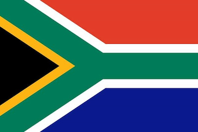

Jed van Eeden
About Me

My name is Jed van Eeden, and I am a student At BYU Pathway. I was born in South Africa. My goal is to study hard and become a successful software engineer. I love solitude and thrive in quiet environments where I am alone.
South Africa

South Africa is a country located at the southern tip of the African continent. It is known for its diverse culture, stunning landscapes, and rich history. Cape Town is its legislative capital. It has a rich cultural heritage and is home to a diverse population and fauna. It is also home to the famous Table Mountain and Lions Head.